×


 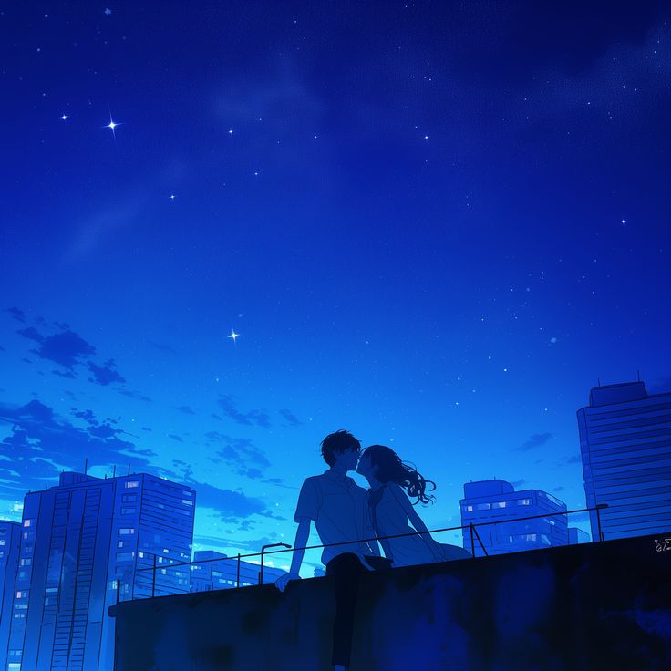
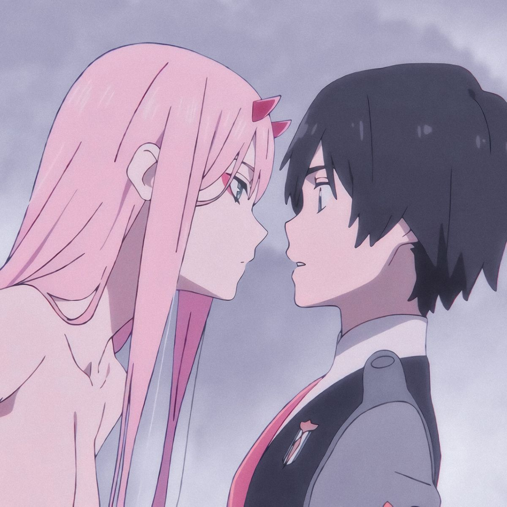
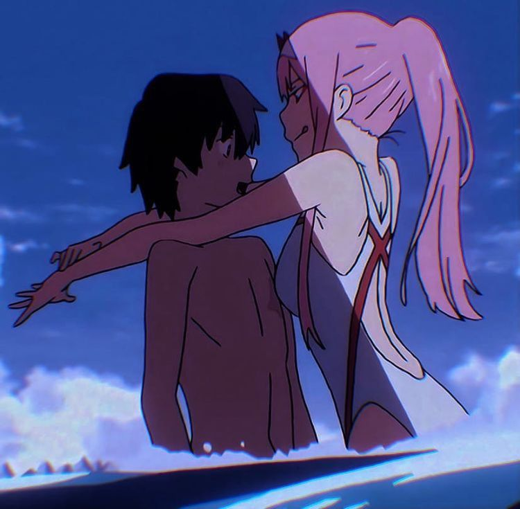
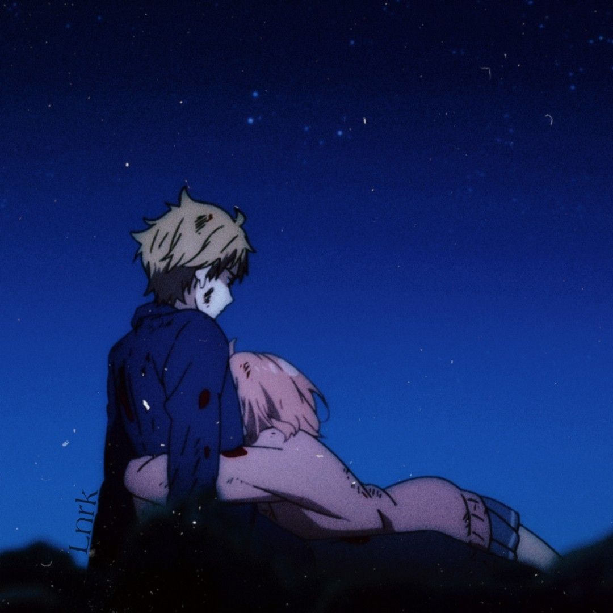
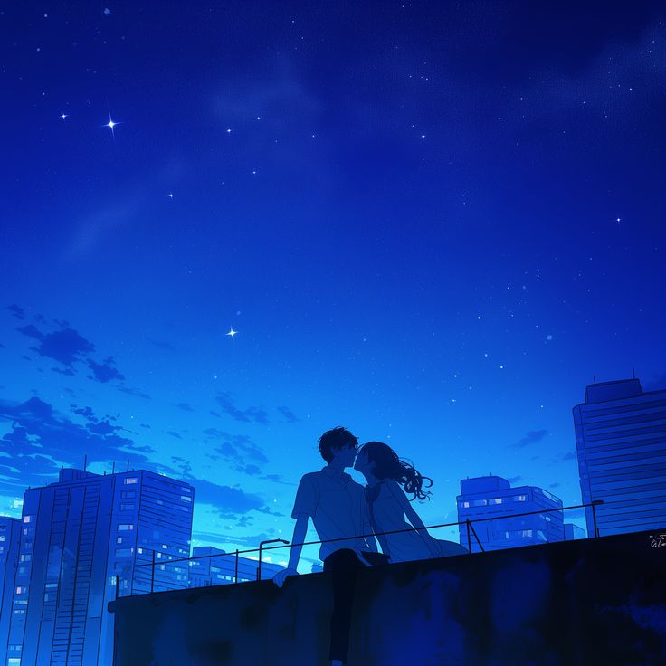
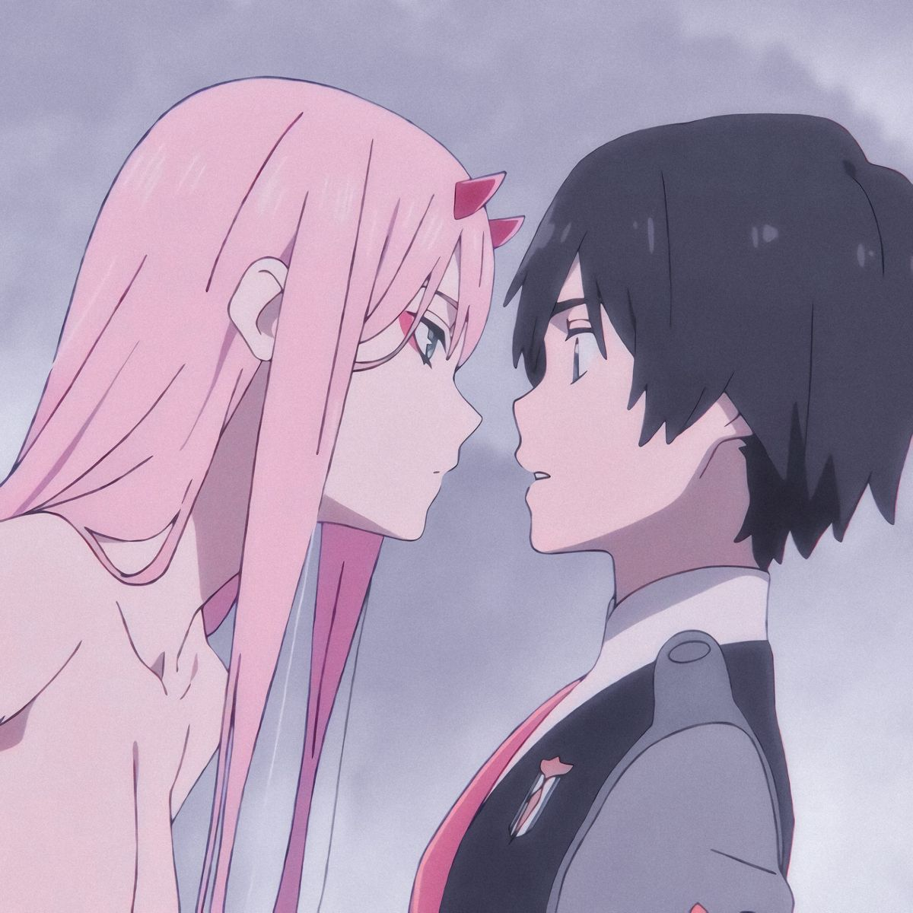
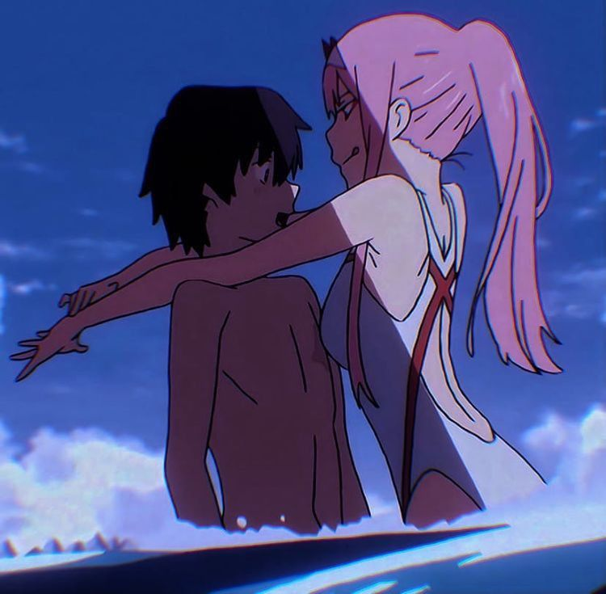
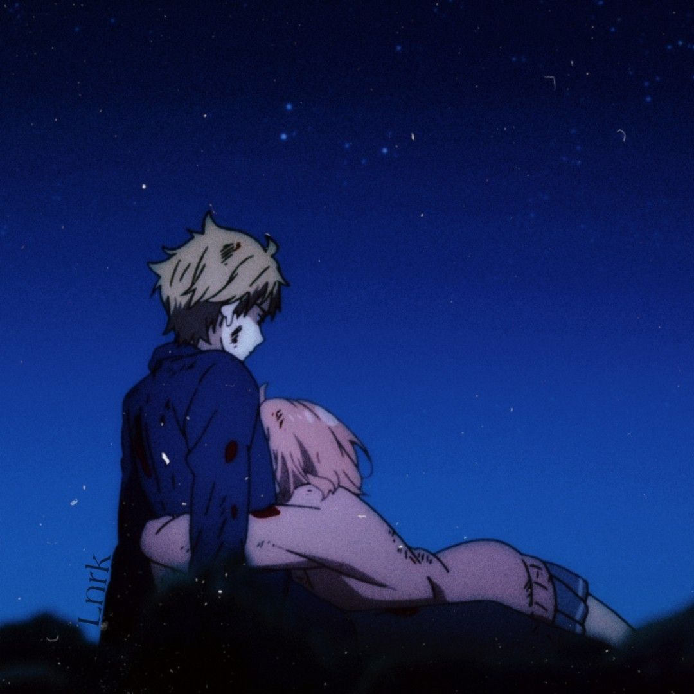
Я тебя люблю, Малышка 💜
Пусть каждый день будет волшебным и радостным 🌟


Сегодня твой день особенный! Пусть он будет наполнен радостью и любовью.
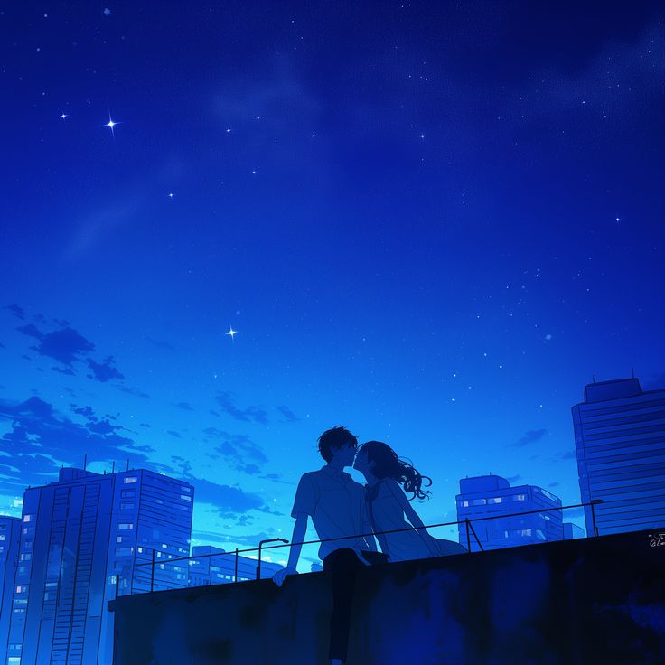
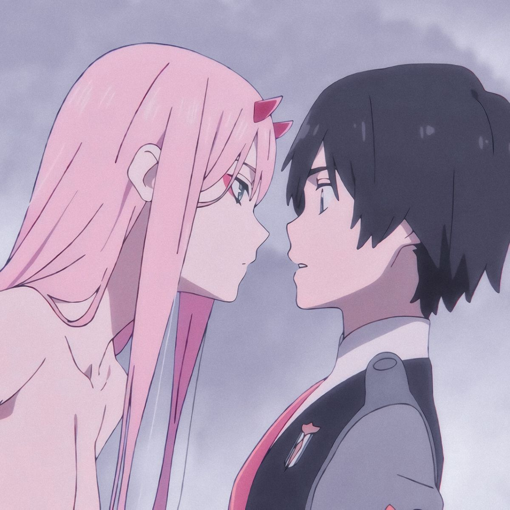
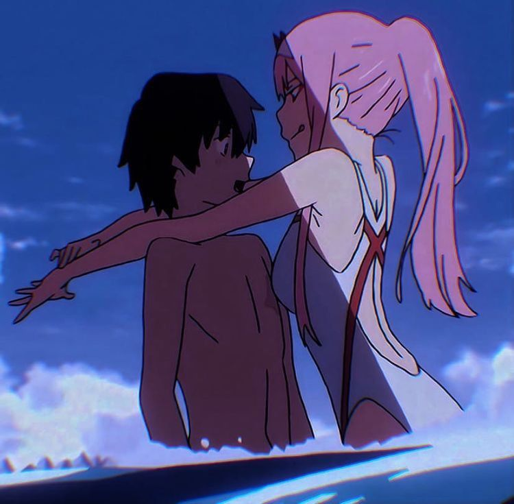
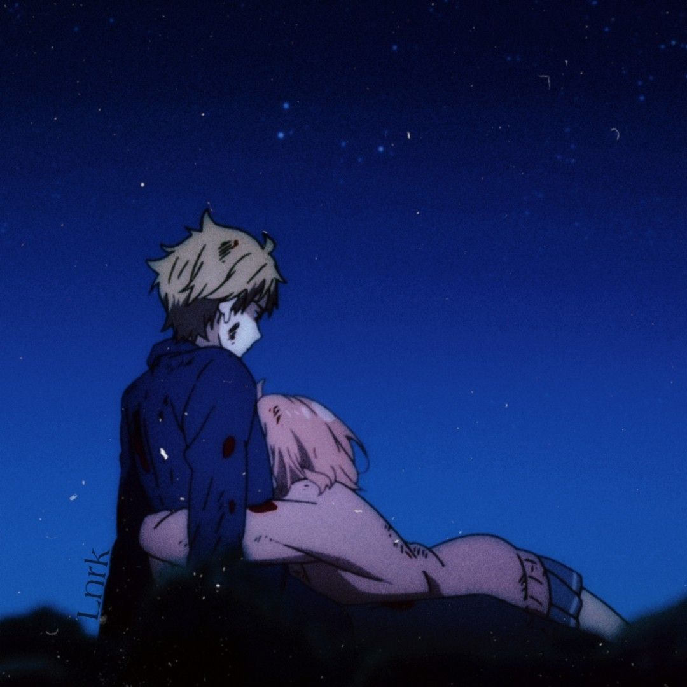
Я тебя люблю, Малышка 💜
Пусть каждый день будет волшебным и радостным 🌟